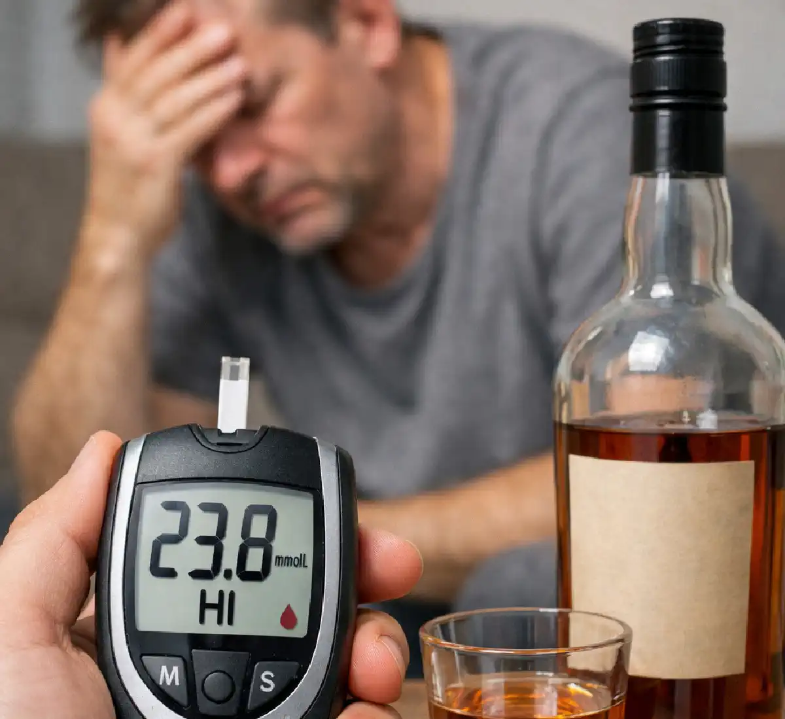

+38(068) 79 72 782
+38(068) 79 72 782Алкоголь при сахарном диабете
Стабильный сахар — лучший выбор вместо спиртного


Бесплатная консультация, работаем круглосуточно 24/7
Стабильный сахар — лучший выбор вместо спиртного

Влияние алкоголя на уровень глюкозы в крови носит сложный и непредсказуемый характер. В зависимости от вида напитка, его количества и состояния организма, реакция может быть разной. Сладкие алкогольные напитки (ликёры, десертные вина, коктейли) могут вызывать быстрое повышение уровня сахара. Однако спустя некоторое время часто наблюдается резкое его снижение. Это связано с тем, что печень, занятая переработкой алкоголя, перестаёт вырабатывать глюкозу. Особую опасность представляет отсроченная гипогликемия — состояние, при котором уровень сахара падает через несколько часов после употребления алкоголя, чаще всего ночью. Человек может не почувствовать ухудшения состояния вовремя, что увеличивает риск тяжёлых последствий. У пациентов с сахарным диабетом 1 типа риск особенно высок, так как их организм полностью зависит от введения инсулина. Неправильно рассчитанная доза инсулина на фоне употребления алкоголя может привести к резкому падению уровня глюкозы. При диабете 2 типа ситуация также остаётся опасной, особенно при приёме сахароснижающих препаратов, которые усиливают действие инсулина.
Отдельного внимания заслуживает влияние алкоголя на ночной контроль гликемии. После употребления спиртного человек засыпает, и контроль уровня сахара в этот период отсутствует. При этом печень продолжает перерабатывать алкоголь, подавляя глюконеогенез — процесс образования глюкозы. В результате уровень сахара может снижаться в течение нескольких часов подряд, что делает ночную гипогликемию особенно коварной.
Также алкоголь влияет на гормональную регуляцию обмена веществ. Он снижает выработку контринсулярных гормонов, таких как глюкагон и адреналин, которые в норме защищают организм от падения сахара. Это ещё больше усиливает риск гипогликемии и делает её течение более тяжёлым. Не стоит забывать и о влиянии алкоголя на аппетит и пищевое поведение. Часто после употребления спиртного человек либо переедает, выбирая углеводную пищу, либо, наоборот, пропускает приёмы пищи. Оба варианта могут приводить к резким колебаниям уровня глюкозы и ухудшению общего состояния. Алкоголь при сахарном диабете нарушает сразу несколько механизмов регуляции гликемии: влияет на работу печени, изменяет гормональный баланс, снижает контроль над состоянием и повышает риск как гипергликемии, так и опасной гипогликемии. Именно поэтому употребление спиртных напитков требует крайней осторожности, а в ряде случаев — полного отказа.
Алкоголь оказывает комплексное влияние на организм диабетика. Он:
Особенно опасно то, что симптомы алкогольного опьянения могут маскировать признаки гипогликемии, что делает состояние пациента потенциально угрожающим для жизни. Кроме того, алкоголь негативно влияет на центральную нервную систему, замедляя реакцию и ухудшая способность человека адекватно оценивать своё состояние. Пациент может не заметить первые признаки падения уровня глюкозы — такие как дрожь, потливость, слабость или чувство тревоги — и не принять своевременные меры. Дополнительную опасность представляет нарушение пищевого поведения на фоне употребления алкоголя. Человек может пропустить приём пищи или, наоборот, употребить большое количество быстрых углеводов. Это приводит к резким колебаниям уровня сахара в крови, что особенно опасно при уже нарушенном углеводном обмене.
Алкоголь также влияет на эффективность сахароснижающих препаратов. Некоторые из них (например, препараты, стимулирующие выработку инсулина) в сочетании со спиртным могут значительно повышать риск гипогликемии. В то же время возможны ситуации, когда контроль над заболеванием ухудшается из-за пропуска лекарств или несоблюдения режима терапии. Не менее важно учитывать влияние алкоголя на сердечно-сосудистую систему. У пациентов с диабетом и так повышен риск осложнений со стороны сердца и сосудов, а алкоголь может провоцировать скачки артериального давления, нарушения ритма сердца и ухудшение микроциркуляции. Также страдает печень — орган, играющий ключевую роль в поддержании стабильного уровня глюкозы. При регулярном употреблении алкоголя её функции постепенно снижаются, что приводит к ещё более выраженным нарушениям обмена веществ.
Влияние алкоголя на уровень глюкозы неоднозначно:
Это связано с тем, что печень, занятая переработкой алкоголя, перестаёт выделять глюкозу в кровь. В результате может развиться гипогликемия, особенно через несколько часов после употребления спиртного. Такой «двухфазный» эффект делает алкоголь особенно опасным для людей с сахарным диабетом. На первом этапе повышение уровня сахара может создать ложное ощущение стабильности или даже улучшения состояния. Однако спустя время, когда действие алкоголя на печень усиливается, уровень глюкозы начинает стремительно снижаться. Наиболее коварной является отсроченная гипогликемия. Она может развиться через 6–12 часов после употребления алкоголя, нередко в ночное время, когда человек спит и не контролирует своё состояние. В таких ситуациях риск тяжёлых осложнений значительно возрастает.
Алкоголь нарушает естественные защитные механизмы организма. В норме при снижении уровня сахара активируются гормоны (глюкагон, адреналин), которые повышают глюкозу в крови. Однако под воздействием алкоголя этот механизм работает хуже, что делает гипогликемию более глубокой и длительной. Дополнительный фактор риска — сочетание алкоголя с инсулином или таблетированными сахароснижающими препаратами. Такое взаимодействие может усиливать эффект снижения сахара, особенно если доза лекарства была рассчитана без учёта употребления спиртного.
Человек в состоянии алкогольного опьянения часто не контролирует питание: может пропустить приём пищи или съесть недостаточное количество углеводов. Это ещё больше увеличивает вероятность резкого падения глюкозы. Алкоголь создаёт нестабильность уровня сахара в крови, при которой периоды гипергликемии быстро сменяются опасной гипогликемией. Именно эта непредсказуемость делает употребление спиртного при сахарном диабете особенно рискованным и требует повышенного контроля или полного отказа от алкоголя.
Употребление алкоголя при диабете требует строгого контроля:
Даже при соблюдении этих правил полностью безопасного употребления не существует. Дополнительно рекомендуется заранее планировать приём пищи и выбирать продукты, содержащие сложные углеводы. Это помогает снизить риск резких колебаний уровня глюкозы. Важно помнить, что закуска должна быть полноценной, а не ограничиваться лёгкими перекусами. Особое значение имеет регулярный самоконтроль. Уровень сахара следует проверять не только до и после употребления алкоголя, но и через несколько часов, а также перед сном. При необходимости — даже ночью, особенно если было выпито больше обычного или присутствуют факторы риска гипогликемии.
Пациентам рекомендуется всегда иметь при себе быстрые углеводы (например, сахар, сок, глюкозные таблетки), чтобы при первых признаках гипогликемии быстро стабилизировать состояние. Также желательно, чтобы окружающие знали о наличии диабета и могли распознать опасные симптомы. Отдельно стоит учитывать выбор алкогольных напитков. Предпочтение иногда отдают напиткам с меньшим содержанием сахара, однако это не делает их безопасными. Даже «несладкий» алкоголь может вызывать выраженное снижение уровня глюкозы за счёт влияния на печень.
Важно избегать физической активности после употребления алкоголя, так как она дополнительно снижает уровень сахара в крови и может усилить риск гипогликемии. При наличии осложнений диабета (поражение печени, почек, нервной системы, сердечно-сосудистые заболевания) употребление алкоголя становится ещё более опасным и в большинстве случаев не рекомендуется.
Наиболее опасными считаются:
Эти напитки содержат большое количество углеводов, что может вызвать резкие скачки сахара. При этом важно учитывать не только сам напиток, но и его объём: даже относительно «лёгкий» алкоголь при употреблении в больших количествах способен значительно нарушить уровень глюкозы в крови. Пиво представляет отдельную опасность. Несмотря на относительно невысокую крепость, оно содержит углеводы, которые быстро повышают сахар, а затем могут приводить к его снижению. Кроме того, пиво часто употребляется в больших объёмах, что усиливает нагрузку на печень и повышает риск как гипергликемии, так и последующей гипогликемии.
Менее опасными считаются сухие вина или крепкий алкоголь без сахара, однако и они несут риск гипогликемии. Это связано с тем, что этанол независимо от вида напитка подавляет глюконеогенез в печени, снижая способность организма поддерживать нормальный уровень глюкозы. Помните о скрытых источниках сахара — сиропах, соках и газированных напитках, которые часто используются в составе коктейлей. Даже если основа напитка не содержит сахара, добавки могут значительно увеличивать его гликемическую нагрузку.
Отдельного внимания заслуживает сочетание алкоголя с пищей. Если напиток употребляется без достаточного количества углеводов, риск гипогликемии возрастает. Если же вместе с алкоголем потребляется большое количество сладкой или жирной пищи, возможны резкие скачки сахара и дополнительная нагрузка на поджелудочную железу. При сахарном диабете важно учитывать не только вид алкоголя, но и его количество, состав, сочетание с пищей и индивидуальные особенности организма. Даже «менее опасные» напитки не являются безопасными и требуют осторожного отношения или полного отказа.
Алкоголь блокирует процесс глюконеогенеза в печени — образования глюкозы из запасов организма. В результате:
Особенно опасно, что гипогликемия может возникнуть: ночью, через несколько часов после употребления алкоголя.
Такое состояние называется отсроченной гипогликемией и представляет серьёзную угрозу для жизни, поскольку развивается тогда, когда человек уже не ожидает ухудшения самочувствия. После употребления алкоголя печень в первую очередь занимается его детоксикацией и временно «отключает» процессы поддержания нормального уровня глюкозы. Дополнительную опасность создаёт снижение чувствительности к симптомам гипогликемии. Человек может не ощущать привычные признаки — дрожь, слабость, потливость, учащённое сердцебиение. Вместо этого появляется сонливость, заторможенность, спутанность сознания, которые легко принять за обычное действие алкоголя.
Особенно высокий риск возникает у пациентов, получающих инсулин или препараты, стимулирующие его выработку. Если доза была введена в обычном объёме, а приём пищи оказался недостаточным или был пропущен, вероятность резкого падения сахара значительно увеличивается. Ночная гипогликемия считается одной из самых опасных форм. Во сне человек не контролирует своё состояние и не может своевременно принять меры. В тяжёлых случаях это может привести к судорогам, потере сознания и развитию гипогликемической комы.
После эпизода гипогликемии возможно так называемое «реактивное» повышение сахара (эффект контринсулярных гормонов), что ещё больше дестабилизирует течение диабета и усложняет контроль заболевания. Блокировка глюконеогенеза под действием алкоголя — ключевой механизм, который делает его употребление особенно опасным при сахарном диабете. Именно поэтому даже небольшие дозы спиртного могут приводить к серьёзным и непредсказуемым последствиям.
Сочетание алкоголя и инсулина может быть крайне опасным:
Кроме того, алкоголь снижает способность человека контролировать своё состояние и вовремя принять меры. Дополнительный риск связан с тем, что алкоголь изменяет метаболизм глюкозы и нарушает работу печени. Даже при правильно подобранной дозе инсулина ситуация может выйти из-под контроля, поскольку печень перестаёт компенсировать падение сахара за счёт собственных запасов глюкозы.
Особенно опасно сочетание инсулина с алкоголем при пропуске приёма пищи или недостаточном количестве углеводов. В таких условиях инсулин продолжает снижать уровень глюкозы, а организм не получает необходимой «поддержки» извне, что может привести к стремительному развитию гипогликемии. Не менее важно учитывать замедленное развитие симптомов. Человек может чувствовать себя относительно нормально сразу после употребления алкоголя, однако через несколько часов уровень сахара начинает снижаться. В этот момент пациент может уже спать или находиться в состоянии выраженного опьянения, что делает своевременную помощь затруднительной.
Алкоголь также влияет на когнитивные функции: ухудшается внимание, снижается критическое мышление, замедляется реакция. В результате человек может игнорировать тревожные сигналы организма или неправильно оценивать своё состояние. Дополнительным фактором риска является нарушение режима лечения: на фоне употребления алкоголя пациенты чаще забывают измерять уровень сахара, пропускают или неправильно вводят инсулин, что ещё больше повышает вероятность осложнений.
Печень играет важнейшую роль в поддержании нормального уровня сахара в крови. Алкоголь при этом:
При сахарном диабете такие изменения особенно опасны, поскольку обмен веществ уже изначально нарушен. Печень выполняет ряд ключевых функций, обеспечивающих стабильность уровня глюкозы. Она накапливает гликоген и при необходимости расщепляет его, высвобождая глюкозу в кровоток. Также именно в печени происходит глюконеогенез — синтез глюкозы из неуглеводных соединений. Под воздействием алкоголя эти процессы нарушаются, что приводит к сбоям в регуляции сахара. При поступлении этанола в организм печень переключается на его нейтрализацию, так как это приоритетная задача для организма. В этот период механизмы поддержания уровня глюкозы подавляются. В результате даже при снижении сахара организм не может своевременно восполнить его уровень, что повышает риск гипогликемии.
Нарушения углеводного обмена тесно связаны с изменениями липидного обмена. Алкоголь способствует накоплению жира в клетках печени, что приводит к формированию жирового гепатоза. У людей с диабетом этот процесс развивается быстрее и протекает тяжелее из-за уже существующей инсулинорезистентности и нарушений обмена липидов. При регулярном употреблении алкоголя возможны воспалительные изменения в печени — алкогольный гепатит, который со временем может перейти в фиброз и цирроз. Эти состояния существенно снижают способность печени поддерживать нормальный уровень глюкозы и участвовать в обменных процессах.
Кроме того, страдает детоксикационная функция печени. В организме начинают накапливаться продукты обмена и токсины, что ухудшает общее самочувствие, усиливает слабость и может способствовать обострению хронических заболеваний. При сахарном диабете печень уже работает с повышенной нагрузкой. У многих пациентов развивается неалкогольная жировая болезнь печени. Употребление алкоголя в таких условиях ускоряет повреждение органа и усугубляет течение заболевания.
Нарушается гормональная регуляция: снижается чувствительность тканей к инсулину, усиливается инсулинорезистентность, что приводит к ещё большей нестабильности уровня глюкозы в крови. Алкоголь оказывает комплексное негативное воздействие на печень — от функциональных нарушений до серьёзных структурных изменений. На фоне сахарного диабета это значительно увеличивает риск осложнений, ухудшает контроль заболевания и может привести к тяжёлым последствиям для здоровья.
Алкоголь противопоказан при:
В этих случаях даже небольшие дозы алкоголя могут привести к серьёзным последствиям. При нестабильной гликемии алкоголь усиливает колебания уровня сахара, делая их ещё более непредсказуемыми и опасными. У пациентов с частыми эпизодами гипогликемии спиртное значительно повышает риск резкого падения глюкозы, особенно в ночное время или спустя несколько часов после употребления.
При тяжёлом течении диабета организм уже работает на пределе возможностей, и любое дополнительное токсическое воздействие может привести к декомпенсации состояния. Алкоголь в таких случаях способен спровоцировать ухудшение самочувствия, нарушение работы внутренних органов и развитие острых осложнений. Наличие осложнений диабета — таких как нефропатия и нейропатия — также является серьёзным противопоказанием. Алкоголь усугубляет повреждение нервной системы, усиливает болевые и чувствительные нарушения, а также увеличивает нагрузку на почки, ускоряя прогрессирование почечной недостаточности.
При заболеваниях печени употребление алкоголя категорически недопустимо. Печень уже не справляется со своими функциями, а дополнительная нагрузка в виде этанола может привести к быстрому ухудшению состояния, развитию воспаления и даже печёночной недостаточности. Беременность при сахарном диабете требует максимально бережного отношения к здоровью. Алкоголь оказывает токсическое воздействие как на организм женщины, так и на плод, повышая риск осложнений беременности и нарушений развития ребёнка.
При ухудшении состояния необходимо:
Важно помнить, что подобные состояния могут быть опасны для жизни.
Дополнительно следует действовать максимально быстро и чётко. Если человек в сознании, ему нужно дать 15–20 г быстрых углеводов (например, сладкий сок, глюкозные таблетки, сахар). Через 10–15 минут важно повторно измерить уровень глюкозы и при необходимости снова дать углеводы. После купирования гипогликемии рекомендуется обеспечить приём пищи с «медленными» углеводами (хлеб, каша), чтобы предотвратить повторное падение сахара, особенно если причиной стало употребление алкоголя.
Если человек находится в спутанном сознании, не следует пытаться давать ему пить или есть — это может привести к удушью. В таких случаях необходимо уложить его на бок (стабильное боковое положение), контролировать дыхание и пульс до приезда медиков. При наличии глюкагона (если он был назначен врачом) его можно использовать для экстренной помощи при тяжёлой гипогликемии. Это особенно важно, если пациент не может самостоятельно принять углеводы.
Обязательно сообщите прибывшим медикам, что человек употреблял алкоголь и страдает сахарным диабетом — это поможет быстрее поставить правильный диагноз и начать лечение. Также после стабилизации состояния важно не игнорировать произошедший эпизод. Рекомендуется обратиться к врачу для коррекции терапии, оценки рисков и получения дальнейших рекомендаций.
В ситуациях, когда состояние пациента ухудшается после употребления алкоголя, крайне важно не откладывать обращение за медицинской помощью. Алкоголь может вызывать резкие колебания уровня глюкозы, ухудшать работу внутренних органов и приводить к опасным осложнениям, особенно у людей с хроническими заболеваниями. В таких случаях профессиональная помощь врача-нарколога позволяет не только стабилизировать состояние, но и предотвратить развитие тяжёлых последствий. Врач-нарколог при выезде на дом может:
Наркологическая помощь на дому — это удобный и эффективный способ быстро оказать помощь пациенту без необходимости госпитализации, особенно в экстренных ситуациях. Такой формат лечения позволяет снизить стресс, обеспечить комфорт и начать терапию уже в первые часы после обращения. Наркологическая клиника UmbrellaPlus оказывает профессиональную помощь в городах Украины: (Киев | Харьков | Одесса | Днепр | Львов | Запорожье | Черкассы). Опытные специалисты работают круглосуточно и готовы выехать к пациенту в любое время.
Телефон для консультации и вызова нарколога: +38(050-021-69-57)

Да, мы строго соблюдаем полную конфиденциальность на всех этапах лечения. Информация о пациенте, диагнозе и прохождении терапии не передаётся третьим лицам. Обращение к нам не влечёт постановку на учёт. Вы можете быть уверены в безопасности и анонимности.
Программа лечения разрабатывается индивидуально после консультации со специалистом. Учитываются вид зависимости, её длительность, физическое и психологическое состояние пациента. Такой подход позволяет повысить эффективность терапии и снизить риск срыва. Мы не используем шаблонные решения.
Да, мы сопровождаем пациентов и после основного курса лечения. Проводятся консультации, рекомендации по адаптации и профилактике рецидивов. При необходимости возможна дальнейшая психологическая поддержка. Это помогает сохранить результат и вернуться к полноценной жизни.
Номер телефона:
+380 (68) 797 27 82
+380 (50) 021 69 57
Адрес наркологического центра вашего города уточняйте по
телефону
Работаем в: Киеве, Одессе, Львове, Харькове, Днепре,
Запорожье, Черкассах, Чугуеве, Черноморске, Каменском
Telegram: t.me/umbrellaplus
График работы: Круглосуточно